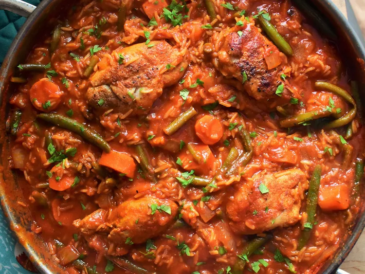

Jollof Rice

Description
Jollof, or jollof rice, is a rice dish from West Africa.
The dish is typically made with long-grain rice, tomatoes, chilis, onions, spices,
\and sometimes other vegetables and/or meat in a single pot,
although its ingredients and preparation methods vary across different regions.
The dish's origins are traced to Senegal.
Regional variations are a source of competition among the countries of West Africa,
and in particular between Nigeria and Ghana, over whose version is the best;
in the 2010s this developed into a friendly rivalry known as the "Jollof Wars".
Ingredients
Base
- 1 large red bell pepper, cut into small pieces
- 2 medium vine tomatoes, cut into small pieces
- 1 red onion, quartered
- 1 red onion, finely chopped
- 2 red scotch bonnet chillies, quartered
- 3 garlic cloves, smashed
- 25g fresh ginger, peeled and roughly chopped
- 100ml water
Rice
- 600ml water
- 150ml vegetable oil
- 150g double concentrated tomato puree
- 1 tbsp curry powder
- 2 tsp dried thyme
- 3 chicken stock cubes
- 2 dried bay leaves
- 600g white basmati rice
Steps
- Place the bell pepper, tomatoes, quartered union, chillies, garlic, ginger and 100ml water in a blender and blend until smooth.
- Heat the vegetable oil in a large Dutch oven set over a medium heat. Add the diced onion and cook, while stirring occasionally, for 3 minutes, then add the tomato puree and cook, while stirring frequently, until it begins to darken, for about 3 to 5 minutes.
- Pour in the blended base, stir to combine and bring to a simmer. Reduce the heat to medium-low and partially cover the pot with the lid – it will splatter! Cook, stirring occasionally, until the sauce is reduced by about a third of its original volume and the oil begins to separate from the sauce, for about 12 to 15 minutes.
- Stir in the curry powder, thyme, stock cubes, bay leaves and water. Season generously with salt and pepper, to taste, then cover and bring to a boil over medium-high heat.
- Meanwhile, rinse the rice thoroughly with cold water until the water runs clean, then drain. Add the rice to the sauce and stir to combine. As soon as it comes to a boil, reduce the heat to low, cover the pot and cook for 25 minutes.
- By this point, the rice should have absorbed all the liquid and be cooked through. Remove the bay leaves, give the rice a stir and you’re ready to serve, preferably with grilled chicken and fried plantain.
Recipe from Zena's Kitchen